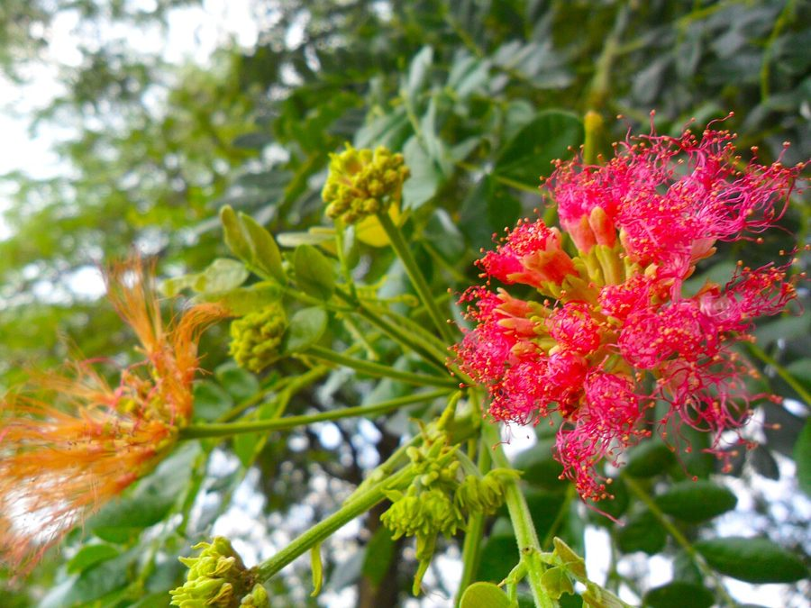

विलायती सिरसRain Tree
Samanea saman · Fabaceae · FLR-0290

- Scientific name वैज्ञानिक नाम
- Samanea saman (Jacq.) Merr.
- Family कुल
- Fabaceae
- Hindi हिंदी
- विलायती सिरस
- Local names स्थानीय नाम
- vilayati siris, rain tree, samanea
- Status here यहाँ की स्थिति
- naturalized
- Movement आवागमन
- Resident, here all year
- Known from कहाँ दर्ज
- Others have published records from the wider Awadh–Purvanchal plain, none yet from Basti–Ayodhya अवध–पूर्वांचल से दूसरों के प्रकाशित अभिलेख, बस्ती–अयोध्या से अभी नहीं
- IUCN IUCN
- not evaluated
- Review समीक्षा
- audited and independently read
When to look कब देखें
Present all year. साल भर मौजूद।
Uses and possibilities उपयोग और संभावनाएँ
Drawn from the documented uses in the profile below, where each is labelled traditional, current or a research lead. All uses →
Tell it apart from इनसे अलग पहचानें
विलायती सिरस / Rain Tree
Samanea saman (Jacq.) Merr. — Fabaceae
विलायती सिरस — एक विशाल, सुंदर, सदाबहार पेड़ जो दक्षिण अमेरिका से आया है, पर अब भारत के हर शहर और गाँव में पाया जाता है। इसकी छतरी के आकार की चौड़ी, हरी-भरी शाखाएँ बहुत बड़ी जगह को छाया देती हैं। इसके पत्ते दिन ढलने के समय बंद हो जाते हैं, जिससे हल्की-हल्की बारिश भी नीचे तक पहुँच जाती है (इसीलिए नाम "वर्षा पेड़")। गुलाबी-सफेद फूल बहुत सुंदर होते हैं। चपटी फलियाँ पशुओं का चारा होती हैं।
Quick Identification त्वरित पहचान
| Feature | Description |
|---|---|
| Form | Deciduous/evergreen tree, 15–25 m tall, broad umbrella-shaped crown, massive spreading branches |
| Leaves | Bipinnate, 30–50 cm, leaflets very small, closing in evening and on rainy days |
| Flowers | Small, pink and white, silky, in spherical puff-like clusters at branch tips |
| Pod | Long, flat, 10–20 cm, smooth, dark brown when ripe, sweet pulp inside |
| Bark | Pale gray-brown, smooth becoming rough with age |
| Crown | Broad, spreading, forming a wide umbrella or mushroom shape; very dense shade |
Field tip: A massive tree with umbrella-shaped crown and fine, feathery leaves that close at dusk. Leaves also close on rainy days, allowing light rainfall to reach the ground below. Pink and white pom-pom flowers in May–June. Long flat pods in autumn. Planted as avenue and shade tree.
हिंदी — कैसे पहचानें: विशाल पेड़, छतरी जैसी शाखाएँ, महीन पत्तियाँ। शाम को पत्तियाँ बंद हो जाती हैं। गुलाबी फूल, चपटी लंबी फली।
Morphology आकारिकी
Biometrics (measurements for rain tree in Indian avenue and park plantations):
| Measurement | Range |
|---|---|
| Tree height | 15–25 m |
| Crown diameter | 20–40 m |
| Trunk diameter | 50–150 cm |
| Leaf length | 30–50 cm |
| Leaflet | 2–5 mm |
| Flower cluster diameter | 2–3 cm |
| Pod length | 10–20 cm |
Trunk and bark: Stout, often with multiple flares or buttressing at the base. Bark is smooth and pale when young, becoming dark and rough with age. Wood is pale, hard, moderately durable.
Leaves: Bipinnate, large, with numerous small, linear leaflets arranged in pairs. The petiole is long and winged. Leaves are highly sensitive to light; they close in evening and on cloudy/rainy days (nyctinasty), allowing rain to reach the ground.
Flowers: Small, silky, pink and white, numerous, arranged in compact spherical clusters at the tips of branches, flowering over several weeks in late spring.
Fruit: A legume pod, long, flat, 10–20 cm, smooth, pale brown to dark brown when mature. The endocarp contains a sweet pulp surrounding the seeds.
हिंदी: बहुत महीन पत्ती, शाम को बंद। गुलाबी फूल, गोल गुच्छे में। लंबी, चपटी, मीठी फली।
Behaviour & Ecology व्यवहार और पारिस्थितिकी
A large, fast-growing legume tree from tropical America, now widely naturalized in tropical and subtropical regions worldwide. Samanea saman thrives in warm climates and tolerates a wide range of soils. It is drought-tolerant once established and fixes nitrogen through root nodules. The tree produces massive lateral branches that form a characteristic umbrella or mushroom-shaped crown, providing dense shade over a large area. The leaf-closing behavior (nyctinasty) is unique and allows light rainfall to penetrate to plants below. Flowering is prolific; the sweet pods are valuable livestock feed. The wood is durable for construction and fuel. The tree is now extensively planted as an avenue tree in Indian cities and towns, and has naturalized in many waste areas and forest margins.
हिंदी: बहुत तेज़ी से बढ़ता है, विशाल छाया देता है। नाइट्रोजन जमा करता है। मीठी फलियाँ पशु को बहुत पसंद हैं। सूखे को सहन करता है।
Life Cycle / Phenology जीवन चक्र
| Month / Season | Event |
|---|---|
| January–March | Brief leaf fall or dormancy; new leaf flush as tree leafs out |
| March–May | Flowering; elongated pink and white flower clusters on branch tips |
| May–July | Fruit (pod) development; pods swelling |
| July–September | Pod growth and filling with pulp and seeds |
| September–November | Pod maturity; color change to dark brown; pods drop |
| November–December | Seed dormancy; some pods remain on tree |
A mature tree flowers annually and produces abundant pods.
हिंदी: मार्च में नई पत्तियाँ, मई-जून में फूल, सितंबर-अक्टूबर में फली पक जाती है, पतझड़ में गिरती है।
Associated Species / Interactions संबंधित प्रजातियाँ
- Nitrogen fixation: Root nodules host Rhizobium bacteria, enriching soil.
- Shade-dependent species: Neem, Jamun, and Mango often grow in the shade of rain trees in old gardens.
- Fruit consumers: Domestic cattle, water buffalo, goats, and wild herbivores browse the fallen pods.
- Associated groundflora: Grasses and shade-tolerant herbs establish under the rain tree's open canopy.
Pests and Diseases कीट और रोग
- Leaf-eating caterpillars: Occasionally, Castor semi-looper (Achaea janata) defoliates young leaves; damage is usually light.
- Scale insects: Rarely, scale insects infest the trunk; natural predators often keep populations in check.
- Pod rot: Botrytis and Fusarium occasionally cause mold on fallen pods in wet conditions; disease is rarely economically significant.
- Termites: Termites may attack dead wood and old branches; living wood is rarely attacked.
Agricultural / Human Relevance कृषि प्रासंगिकता
Livestock fodder: The pods are the primary value of rain trees in traditional agroforestry. The sweet, nutritious pods are dried and stored for dry-season livestock feeding. In some regions, the leaves are also lopped for fodder.
Timber: The hard, moderately durable wood is used for construction, tool handles, and fuel. It is of moderate commercial value.
Soil improvement: As a nitrogen-fixing legume, the tree improves soil fertility under its canopy. Leaf litter decomposes slowly, forming a dark humus layer.
Avenue and shade tree: Extensively planted in Indian cities as an ornamental and shade tree for roadsides, courts, campuses, and common lands. The wide crown provides excellent shade for humans and animals to rest.
Ornamental value: The umbrella-shaped crown, feathery foliage, and silky pink flowers make it a popular ornamental, especially in public spaces.
हिंदी: पशुओं के लिए बहुत अच्छा चारा। लकड़ी मजबूत, ईंधन और सामान बनाने में काम आता है। मिट्टी में नाइट्रोजन जोड़ता है। छाया बहुत अच्छी होती है।
Expected Locally स्थानीय रूप से अपेक्षित
Not a field record. Written from published accounts for eastern Uttar Pradesh. No confirmed local sighting yet — if you have seen it, that is what the atlas needs.
अभी तक स्थानीय पुष्टि नहीं। यह विवरण प्रकाशित स्रोतों से है, किसी अवलोकन से नहीं।
Rain trees are to be expected as planted avenue and ornamental trees throughout Basti district, particularly in towns, village squares, roadsides, and old estates. GBIF holds published records from the wider Awadh–Purvanchal plain. The tree has naturalized in some waste areas and field margins, particularly in warm, moist sites with good drainage.
Distribution वितरण
Global range: Native to Central and South America; now cultivated and naturalized in tropical and warm subtropical regions worldwide.
In India: Extensively planted in all urban and rural areas as an avenue and shade tree.
In Uttar Pradesh: Planted throughout the state, particularly in towns and villages.
In Basti district / eastern UP: Common as an avenue tree and in old villages; naturalized in some waste areas; records from the wider plain.
Research Questions शोध प्रश्न
Anyone can investigate these | कोई भी इन प्रश्नों की जाँच कर सकता है
- How many pods does a mature rain tree produce in one year, and what is the total dry weight of pods? / एक पेड़ एक साल में कितनी फलियाँ देता है? — Mark a tree; collect fallen pods over a year; weigh dried pods.
- At what time of day do the leaves close most completely, and is there a difference on sunny vs. cloudy days? — Observe the same leaf at hourly intervals.
- Which animals eat the fallen pods, and how much can a cow or buffalo consume in one day? / गाय-भैंस कितनी फलियाँ खाते हैं? — Watch livestock feeding; estimate consumption.
- How deep do the roots of a rain tree grow, and are the roots damaging to nearby buildings or underground pipes? — Dig around a tree; measure root depth.
- Can rain tree seedlings be grown from fresh seed without any treatment, and what is the germination rate? — Collect fresh seed; plant in soil; count germination.
Similar Species मिलती-जुलती प्रजातियाँ
| Species | How to tell apart | हिंदी | |
|---|---|---|---|
| [[siris\ | Siris / Silk Tree]] (Albizia lebbeck) | Similar but tree smaller (10–15 m), leaflets slightly larger, flowers pale yellow-green, not pink | सिरस — छोटा, पीले-हरे फूल |
| Neem (Azadirachta indica) | Much smaller leaflets; flowers white, arranged in branched panicles; tree narrower crown | नीम — पत्तियाँ कटी-फटी; पीले-सफेद फूल; तंग ताज | |
| [[jamun\ | Jamun]] (Syzygium cumini) | Smaller tree; simple leaves (not bipinnate); dark purple fruit; denser canopy | जामुन — साधारण पत्तियाँ; बैंगनी फल; घना पेड़ |
Field rule: A massive, spreading tree with umbrella-shaped crown, feathery leaves that fold at dusk and in rain, pink and white silky flowers, and long flat sweet pods. One of the tallest and broadest trees in the district.
Taxonomy & Classification वर्गीकरण
Original description. Originally described by Nicolas Jacques Jacquin in 1760 as Mimosa saman. Later transferred to Samanea by Merrill in 1906. The genus name Samanea is derived from the local name "samane" in South America. The specific epithet saman is from the local indigenous name.
Subspecies. Monotypic — no subspecies are currently recognised.
Family and order placement. Fabaceae (legume family), subfamily Mimosoideae, order Fabales. Related to acacias, silk tree, and other mimosa-type trees.
Phylogenetic notes. Samanea saman is the only species in the genus Samanea, thought to have diverged from Albizia within the last few million years. Molecular evidence confirms it as a distinct lineage within the mimosoid legumes.
IUCN status rationale. Not evaluated. Widespread in cultivation; native populations in South America are not under threat, and the species is now naturalized in many regions worldwide.
Photo Gallery फोटो गैलरी
Photos needed आवश्यक फोटो
- [ ] Whole tree showing umbrella-shaped crown (पूरा पेड़)
- [ ] Pink and white flowers in ball-shaped clusters (फूल)
- [ ] Flat brown pods on ground and on tree (फली)
No photos yet — add field photos to media/species/rain_tree/ and run node scripts/sync_photos.js.
References संदर्भ
- Jacquin, N.J. (1760). Selectarum Stirpium Americanarum Historia. Vienna.
- Merrill, E.D. (1906). A flora of Manila. Bureau of Printing, Manila.
- Hooker, J.D. (1875). Flora of British India, Vol. 2. L. Reeve & Co., London.
- Brandis, D. (1906). Indian Trees. Archibald Constable & Co., London.
- Botanical Survey of India (2013). State Flora Series: Flora of Uttar Pradesh. BSI, Kolkata.
- GBIF Occurrence Data — Samanea saman, India (2020–2026).
Source file: species/flora/trees/rain_tree.md